Quarto individual
01 quarto com banheiro, para até 4 pessoas.
- Até 4 pessoas
- Banheiro privativo
- Ideal para família ou 3 pescadores
Centro de Bertioga · de frente ao Canal
Peixes e frutos do mar, quartos com vista para a água, passeios de lancha com marinheiro e pescarias em grupo. Tudo saindo do mesmo píer.
01 — O Rancho
Localizado no centro de Bertioga, de frente ao Canal, o Rancho da Âncora reúne bar e restaurante, quartos para locação, aluguel de lancha e pacotes de pescaria. Um lugar perfeito para festas de fim de ano, aniversários, encontro de amigos, confraternizações e pescarias, e um ótimo ponto de partida para aproveitar as praias e a noite da cidade.
Com decoração rústica, recebe famílias, grupos de amigos, motociclistas e pescadores de todo o país.
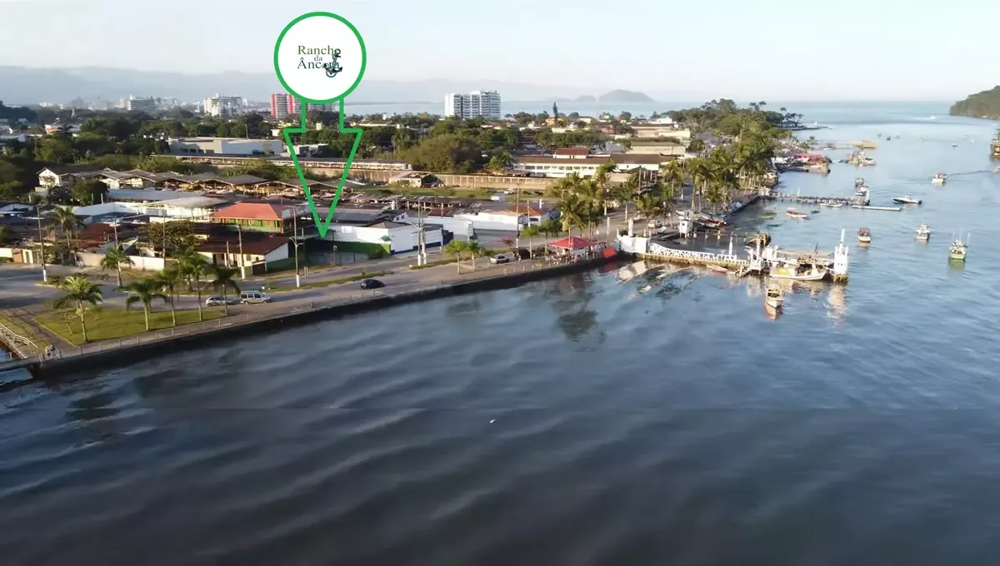
02 — Experiências
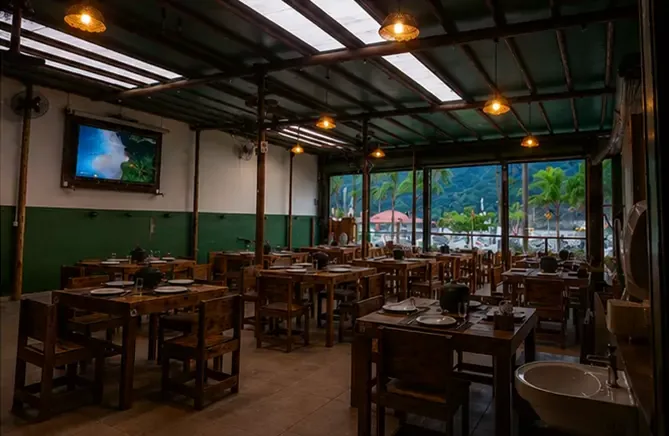
Peixes, frutos do mar e entrega a bordo.
Conhecer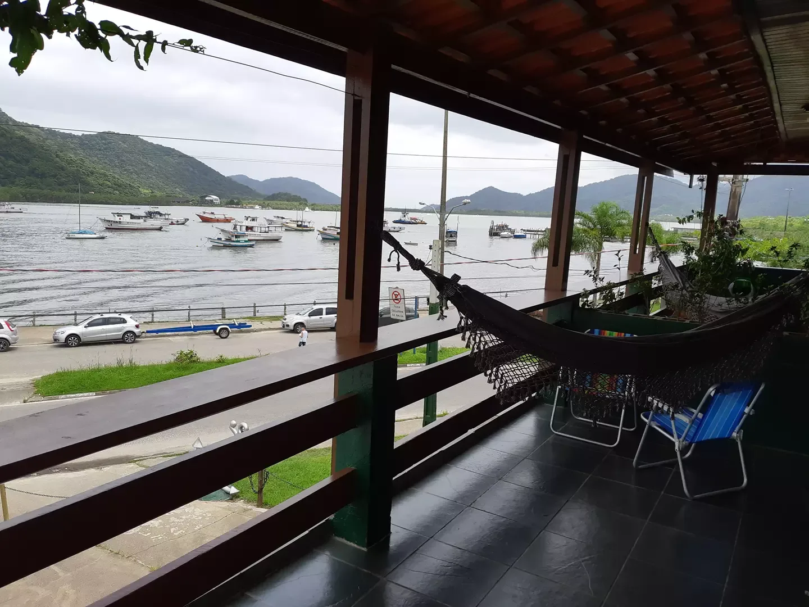
Quartos completos com vista para a água.
Conhecer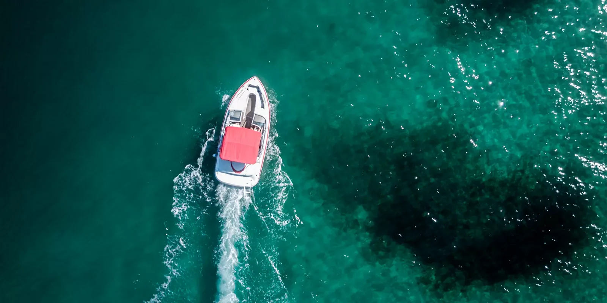
Praias e ilhas com marinheiro e diesel inclusos.
Conhecer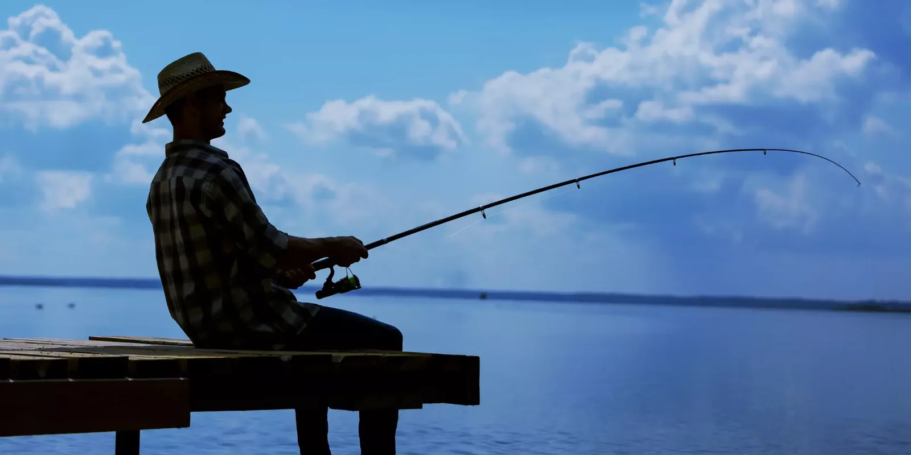
Pacotes para grupos de 3 a 18 pessoas.
Conhecer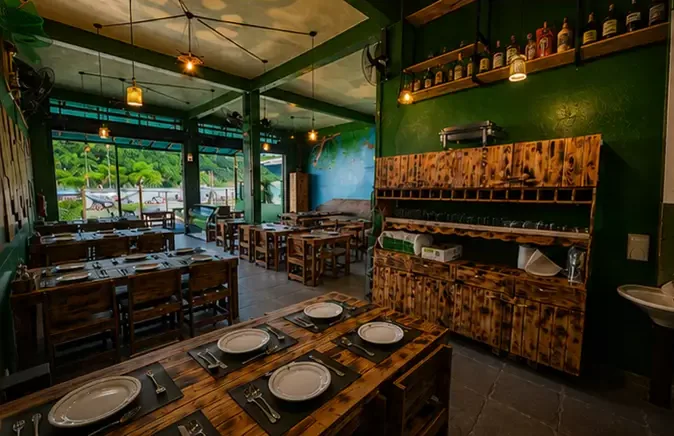
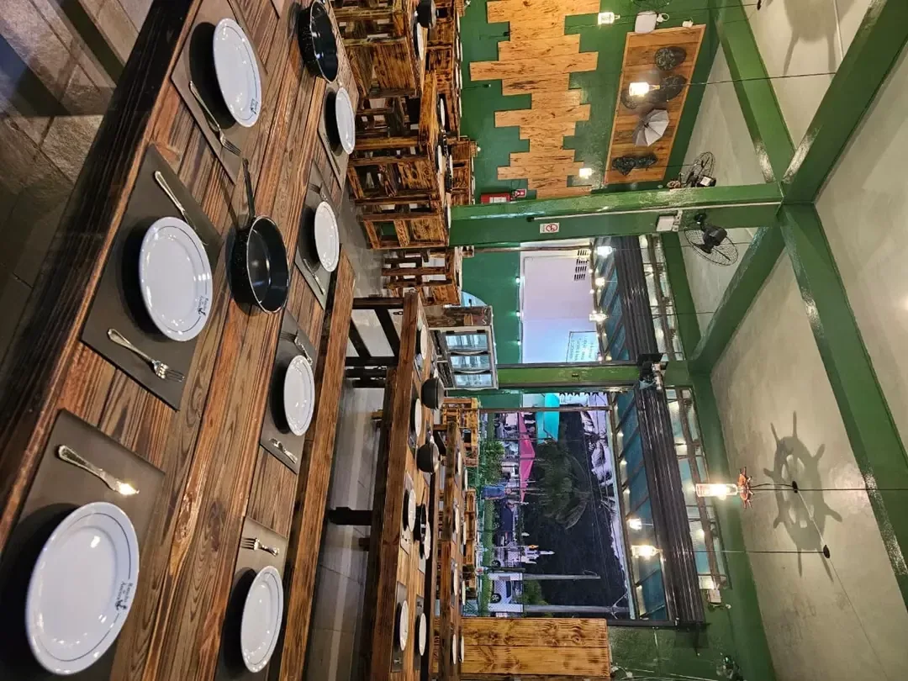
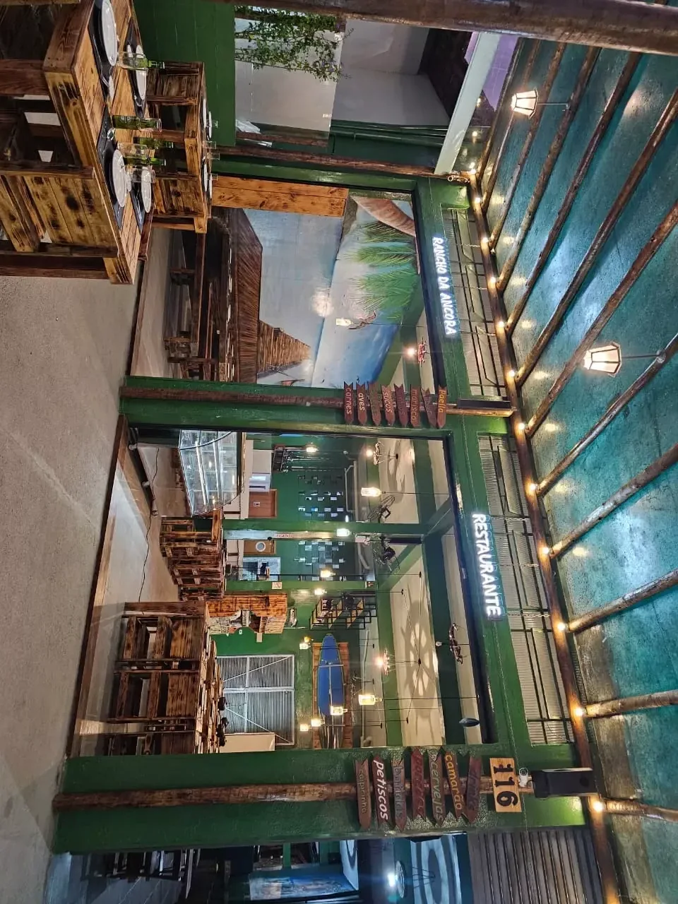
03 — Bar & Restaurante
Cardápio completo com especialidade em peixes e frutos do mar, servido num salão de madeira rústica, luzes quentes e janelas abertas para o movimento dos barcos.
Exclusivo no canal
Peça pelo WhatsApp informando o nome da embarcação e onde vocês estão. O pedido sai da cozinha do Rancho direto para o seu barco.
04 — Hospedagem
Ideal para quem quer curtir praias, ilhas, trilhas e o centro de Bertioga. Café da manhã e almoço podem ser pedidos no Bar e Restaurante.
01 quarto com banheiro, para até 4 pessoas.
Locação dos 6 quartos, sem acesso à churrasqueira.
Os 6 quartos com churrasqueira, geladeira, freezer e espaço gourmet.
05 — Locação de lanchas
Passeio com marinheiro por Bertioga e Guarujá. Diesel incluso, até 10 pessoas e espaço gourmet com churrasqueira a bordo.
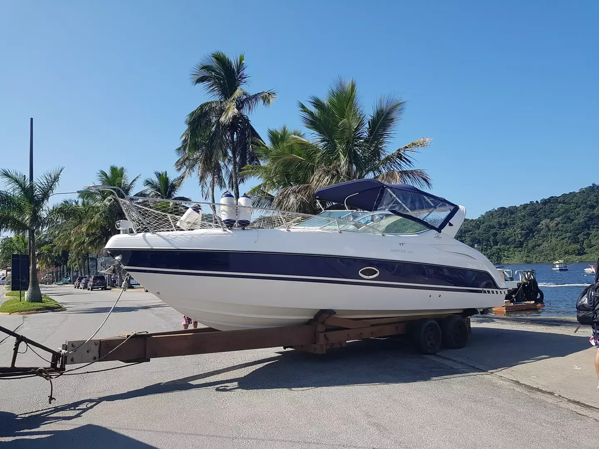
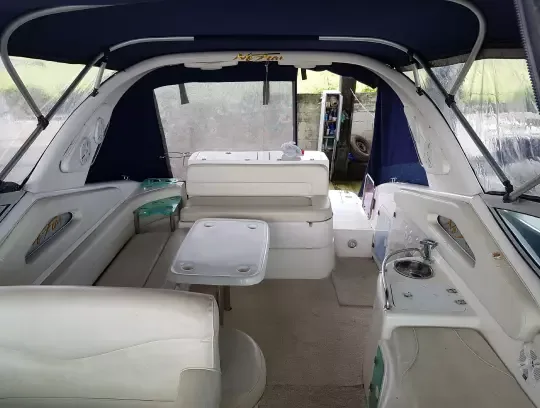
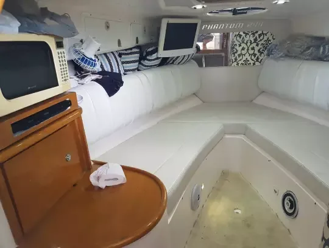
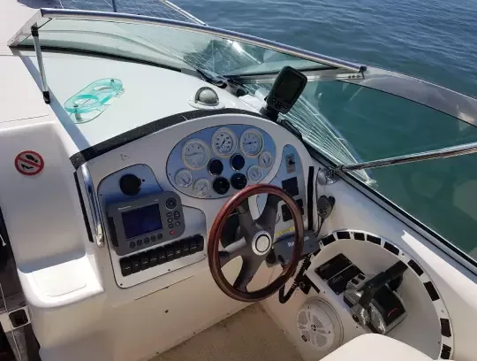
Embarque na marina de Bertioga ou no píer público · Estacionamento gratuito para 2 veículos.
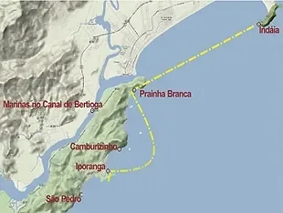
06 — Pacotes de pescaria
O único com pacote gastronômico e churrasco: grupos de 3 a 18 pessoas (ou avulsos, conforme disponibilidade), de frente para o canal e com o píer público iluminado para a pesca noturna.
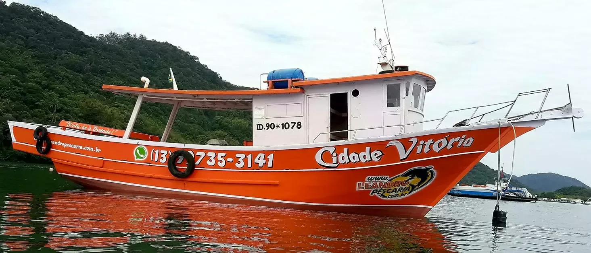
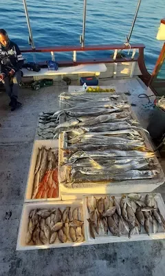
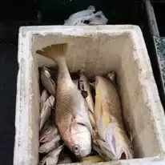
Quem preferir pode trocar o almoço executivo por marmita.
Mercado Municipal de Peixe a 100 m, com camarão fresco, lula e sardinha. Na rampa em frente ao Rancho, nativos vendem camarão e pitu vivos.
07 — Para quem não vai pescar
Mergulho livre, caiaque, passeios de barco, trilhas, cachoeiras ou só sol. O Rancho fica no centro, perto da Praia da Enseada, Prainha Branca e Camburizinho.
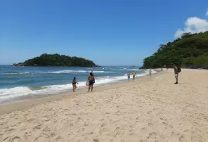
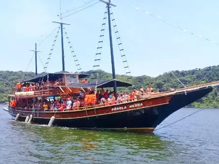
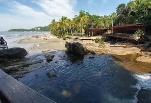
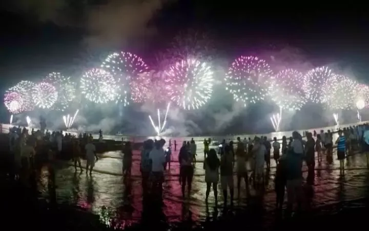
08 — Galeria
09 — Fale com o Rancho
Av. Vicente de Carvalho, 116 · Centervalle
Bertioga · SP · CEP 11250-000